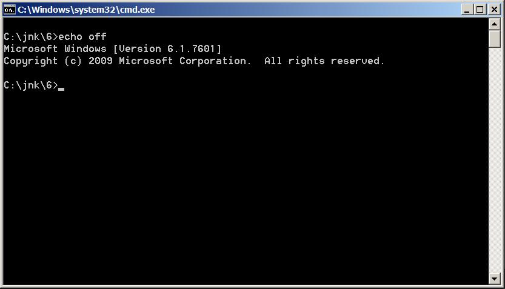
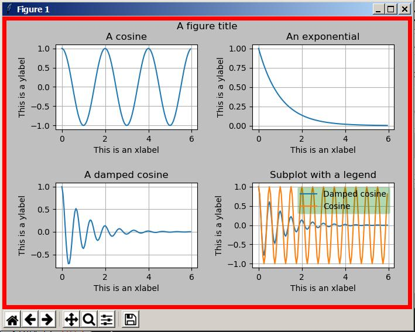

As mentioned in the earlier Overview document, there are some advantages to downloading and running WinPython. In particular, with that version you can easily move your projects among different computers. However, if you don't need to do that and you are running Windows, you may find it advantageous to download and install Python and then download and install the appropriate packages. One advantage of doing this is that it makes it easier to use the built-in IDLE IDE to create, edit, and execute Python scripts.
Even if you decide not to build your own Python scientific development environment, you may find the material in this lesson educational.
This document provides instructions for building your Python scientific system from scratch on a Windows machine. Hopefully if you are not running Windows, you can translate these instructions into the proper steps for your operating system.
These instructions will require you to do some command-line operations. If you are unfamiliar with the command line, you may find it useful to review the following web page: Getting to Know the Command Line.
Several of the instructions will tell you to open a command-line window in a particular folder. Here is an easy way to do that if you are running Windows.
Use a text editor such as Notepad or Notepad++ to create a batch file named aacmd.bat in the folder of interest. (Make sure the file is NOT named aacmd.bat.txt, which can happen sometimes with Notepad.) Put the following two lines of text in the file:
echo off cmd
When you double-click on that file in Windows Explorer, a command-line window should open in that folder similar to the one shown below. (If the double click simply causes the file to open, it probably has a hidden extension of .txt.)

The image shown above displays text similar to the following.
M:\jnk\6>echo off Microsoft Windows [Version 10.0.26200.7840] (c) Microsoft Corporation. All rights reserved. M:\jnk\6>
You should only need to create the file once. Once you have created the file, you can copy it from folder to folder to open command-line windows in different folders. The text shown above identifies the folder in which the command-line window is opened along with version of Windows. It ends with a command prompt ready for you to use.
Your computer must be connected to the Internet for any of the installations described in this document to be possible.
If you already have Python installed on your system, and you are installing a later version, it would be a good idea to uninstall all existing versions first in order to avoid issues that involve multiple versions.
Here are the steps for downloading and installing Python on a Windows machine. These instructions are current as of 03/20/24. The required steps may change in the future. (Note that these instruction purposely do not install the program in the default folder. I do that to shorten and simplify the path to the executable and to prevent that path from containing space characters.)
At this point you should be able to open the folder named Python3xy and see that Python has been installed.
The following operations can be used to confirm a successful installation.
Much of the material that follows was taken from the following web pages: Installing Packages and Installing Jupyter Notebook. Take a look at those pages for help if you experience problems.
Open a command-line window in some arbitrary folder and enter the following command:
python --version
This should produce an output on the screen similar to the following, but it may differ depending on the version that you have installed:
Python 3.12.1
This is where things may become complicated. If you have multiple versions of Python installed on your computer, the output shown above may refer to a different version than the one that you just installed and in which you are currently interested. In that case, the easiest solution is to uninstall all of the versions other than the one in which you are currently interested and then repeat the command.
If the output refers to the version in which you are currently interested, skip down to continue with the steps listed below. If not, this indicates that you have a problem with the Windows "path".
While it is possible to manually fix the path problem, it can be complicated and dangerous. (A minor mistake can have serious consequences.) Probably the easiest and safest way to correct the problem is to uninstall all versions of Python from your system (including the one that you just installed) and reinstall the version of interest. When you do, be sure to check the box that reads something like "Add Python.exe to PATH".
Then perform the above test again to confirm that the problem has been resolved.
Assuming that you have the version issues resolved, ensure that you can run pip from the command line by entering the following command at the command prompt:
pip --version
This should produce an output similar to the following, but the versions may be different:
pip 23.2.1 from C:\ProgramFiles\Python3121\Lib\site-packages\pip (python 3.12)
Ensure pip, setuptools, and wheel are up to date by entering the following command at the command prompt:
python -m pip install --upgrade pip setuptools wheel
This will produce several lines of output text that should end with something like the following:
Successfully installed setuptools-69.0.3 wheel-0.42.0
Ensure that you have the latest version of pip by entering the following command at the command prompt:
pip install --upgrade pip
If pip is up to date, you should see something like the following:
Requirement already satisfied: pip in c:\programfiles\python3121\lib\site-packages (23.3.2)
Otherwise you should see an output indicating that the latest version is being installed.
At this point you should be ready to use pip to install packages to supplement the basic Python system.
There is no requirement for you to install and use Jupyter Notebook in this course. However, if you are interested in installing and experimenting with the tool, here are the instructions for doing so.
Before continuing, you should view the following three videos for an introduction to the Jupyter Notebook:
To install the Jupyter Notebook code, open a command-line window in an arbitrary folder and enter the following command at the command prompt. (The folder choice doesn't matter at this point because the Windows OS already knows where the required material is located.)
pip install jupyter
This will cause the pip program to download and install the latest version of the Jupyter Notebook from PyPI - the Python Package Index or perhaps some similar online archive.
Then be very patient. This may take a rather long time to complete while producing a large amount of output text on the command-line screen. Eventually the command prompt should return. If you open the Scripts folder in the Python3xy folder after the command prompt returns, you should see many files related to the Jupyter Notebook including a file named jupyter.exe.
You can confirm your Jupyter Notebook installation by creating and executing a very simple Python program inside the Jupyter Notebook.
Open a command-line window in the folder where you plan to store your Jupyter Notebook documents and enter the following command at the command prompt:
jupyter notebook
You should see a lot of text appearing in that window and the Jupyter notebook should open in your browser.
Open the New drop-down list in the upper right.
Select Notebook and then select Python 3.
Enter the following code in the first cell:
print("Hello, World!")
Select the Kernel tab and then select Restart Kernel and Run All Cells.
Select Restart in the window that opens.
The following text should appear inside the cell immediately below the command indicating that you have successfully installed both Python 3 and the Jupyter Notebook.
Hello, World!
When you are satisfied with the results, do the following:
At this point you cannot run any code that requires libraries (such as matplotlib) that are not included in the standard Python distribution because you haven't installed any packages containing such libraries.
Open a command-line window in an arbitrary folder and enter the following command at the command prompt to download and install the latest version of the matplotlib library. This command will also download and install the latest version of the numpy library.
pip install matplotlib
After some time (maybe a long time), the command prompt should return and matplotlib will have been installed. You should see a folder containing matplotlib at a location similar to the following:
c:\programfiles\python3121\lib\site-packages
You should also see a folder containing numpy at the same location.
You can test your installation with a script that requires the matplotlib and numpy libraries in addition to the standard Python libraries.
Create an empty text file named proj01.py in an arbitrary empty folder. (Make sure it is not named proj01.py.txt.)
Right click on the file. You should see an option similar to the following:
Edit with IDLE
That should open the IDLE IDE.
Copy and paste the following code into the IDE.
import numpy as np
import matplotlib.pyplot as plt
import math
fig,axes = plt.subplots(2,2,
figsize=(7,5),
facecolor='0.75',
linewidth=10,
edgecolor='Red')
t = np.arange(0, 6.0, 0.05)
ax0,ax1,ax2,ax3 = axes.flatten()
ax0.plot(t, np.cos(1*np.pi*t))
ax0.set_ylabel('This is a ylabel')
ax0.set_xlabel('This is an xlabel')
ax0.set_title('A cosine')
ax1.plot(t, np.exp(-t) )
ax1.set_ylabel('This is a ylabel')
ax1.set_xlabel('This is an xlabel')
ax1.set_title('An exponential')
ax2.plot(t, np.exp(-t) * np.cos(3*np.pi*t))
ax2.set_ylabel('This is a ylabel')
ax2.set_xlabel('This is an xlabel')
ax2.set_title('A damped cosine')
ax3.plot(t, np.exp(-t) * np.cos(4*np.pi*t),label='Damped cosine')
ax3.plot(t, np.cos(4*np.pi*t),label='Cosine')
ax3.legend(loc='upper right',framealpha=0.3,facecolor='Green')
ax3.set_title('Subplot with a legend')
ax3.set_ylabel('This is a ylabel')
ax3.set_xlabel('This is an xlabel')
ax0.grid(True)
ax1.grid(True)
ax2.grid(True)
ax3.grid(True)
fig.suptitle('A figure title')
fig.tight_layout(pad=2)
plt.show()
Press the F5 key.
This should cause the image shown below to appear on your screen. If you see this image, that confirms that your matplotlib and numpy libraries have been properly installed.

Description of the image shown above.
Type of image:
A multi-panel scientific figure containing four subplots arranged in a 2 by 2 grid, each showing a different mathematical function.
Overall summary:
The figure displays four related plots of mathematical functions, including cosine, exponential decay, and damped cosine curves. Each subplot has the same x and y axis labels, individual titles, and one subplot includes a legend distinguishing two curves. A main title appears centered above the entire figure.
Detailed description:
Purpose of the image:
The image is intended to demonstrate how to generate and display multiple subplots in a single figure using Python, including setting titles, axis labels, plotting different mathematical functions, and adding a legend to distinguish multiple curves within one subplot.
Once the file has been created and populated, you should also be able to execute it by opening a command-line window in that same folder and entering the following command:
python proj01.py
You can use the same code to test Jupyter Notebook in conjunction with the newly installed libraries.
The same image should appear immediately below the code except that it won't have the seven buttons along the bottom.
While you are at it, you should probably go ahead and execute the following command at the command prompt to install the pandas, seaborn, scipy, and pillow libraries. You will need these libraries in the follow-on course (ITSE-1372). The pillow library must be installed if you need to write output files in the jpeg format.
pip install pandas seaborn pillow scipy
Enter the following command to produce a list showing all of the installed libraries. Scroll through the list to confirm that it contains the libraries discussed above.
pip list
You may also discover other libraries that you will need to install as you progress through this coursework. If so, you should be able to use the knowledge gained here to do the installations.
Author: Prof. Richard G. Baldwin
Affiliation: Professor of Computer
Information Technology at Austin Community College in Austin, TX.
File:
BuildingPythonFromScratch.htm
Revised: 02/18/26
Copyright 2018 Richard G. Baldwin
-end-